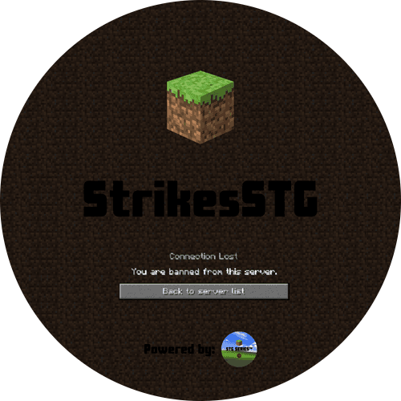

Whole-word only
Substring traps are avoided — classic will not match inside another word. One strike per matched banned word.

A lightweight Paper plugin that catches whole-word profanity in chat, signs, and books —
censors matches, shows a vanilla title, and applies configurable ban thresholds from config.yml.
Substring traps are avoided — classic will not match inside another word. One strike per matched banned word.
Matched words become red *** in chat. Players see a vanilla on-screen title: “You got N strike(s)!”
YAML thresholds like 3 strikes → 1d or 5 → forever. Strikes persist in strikes.yml with console logging.
Download the jar that matches your server from CurseForge or build from GitHub.
Use the build folder that matches your Paper version — jars are not interchangeable across lines.